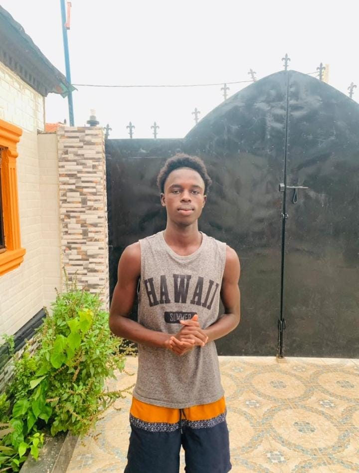

My Story
My name is Muhammed Drammeh, I am from Bundung. I am twenty-two years old. I attended nursery school from N1-N3 at Mr Karim Nursery School, I did my primary school from P1-P6 at Bundung Lower Basic School then i move on to do Junior school at Charles Jow Memorial Academy and finally did my high school at Future Generation Junior And Senior Secondary School. I graduated from high school as a Head Boy on 15th July 2023. After graduating I worked as a teacher at Aunty Kaddy Nursery School and was the Head Teacher from 2024 until the day I left in 2026. I am an aspiring developer and am currently not working but just going to school at JCC and learning how to code. Asides from going to school, I am a Red Cross volunteer and a senior volunteer for that matter at the Kanifing Municipality Red Cross Branch under a home link call Latrikumda Sabiji Home Red Cross Link. I am a passionate first aider who is well trained and certified and I have been lucky to attend so many coverages which help strenghten my knowledge and experience in the field. Also I am a very good debater, judge and trainer. I have debated with so many powerful debaters, and I have been lucky to judge so many debate competitions, also I have been lucky and blessed to train so many people who knew nothing about debate but today they can stand in any ground and show their skills especially in the British Parliamentary Style of debate.
On Monday I wrote my first HTML file and watched chrome turned it into a web page
What I Want To Build
By 2nd October I want to build and have my own website on the internet and a python program that tells the one reading my website a little bit about me that can help them know me a little
Today my pages stopped being black and white. The styling for this whole site lives in one file, and this page did not need a single new rule, only a link.
